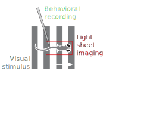
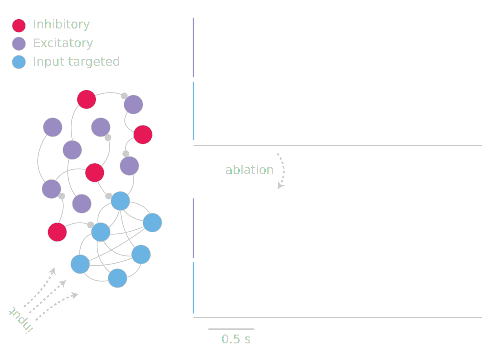

computation
+
neuroscience
@thefreemanlab thefreemanlab.com
github.com/freeman-lab/talk-mit-fall-2015
zebrafish
Misha Ahrens + Philipp Keller + Lab
Misha Ahrens + Philipp Keller + Lab

mouse

Karel Svoboda + Lab
simple behaviors

Simon Peron + Karel Svoboda

Peron et al., 2015

Stella Vincent, dissertation, 1912
tactile virtual reality
Sofroniew et al., 2014

Nicholas Sofroniew + Karel Svoboda
Andrew Oshoeroff + Nicholas Sofroniew + Karel Svoboda
Simon Peron + Freyja Ólafsdóttir + Karel Svoboda

Jason Wittenbach + Simon Peron + Karel Svoboda
we have amazing tools for measuring and manipulating
we need tools
for analyzing, visualizing,
and sharing
analytics for spatial and temporal data, ranging from GBs to TBs, parallized using Spark, with core primitives for distributed n-dimensional arrays
domains: neuroscience, climate, geospatial, satellite
w/ jason wittenbach (@jwittenbach)
andrew osheroff (@andrewosh)
michael broxton (@broxtronix) + others

abstractions for distributed n-dimensional arrays using key-value pairs, currently targeting Spark
github.com/bolt-project
try.bolt-project.org
core abstraction

swapping

API
.shape
.transpose(axes=())
.reshape(shape=())
.squeeze(axis=())
.sum(axis=())
.swapaxes(axis1, axis2)
...
.swap(kaxes, vaxes, size)
.chunk(size, axis)